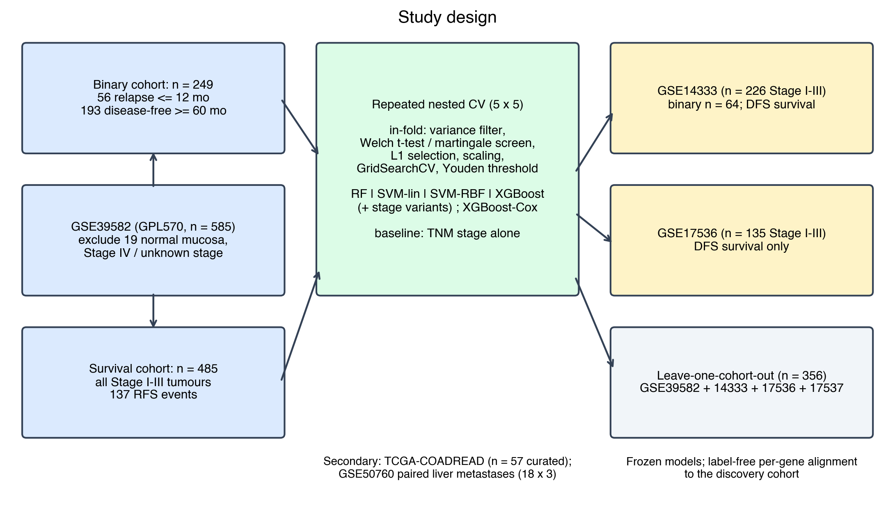
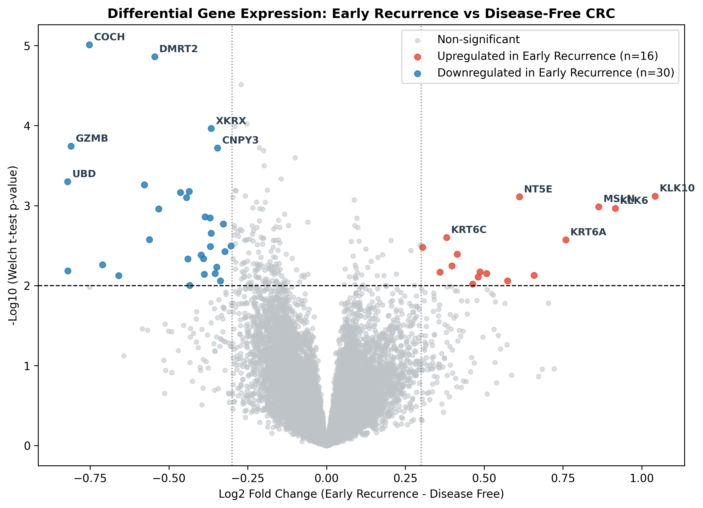
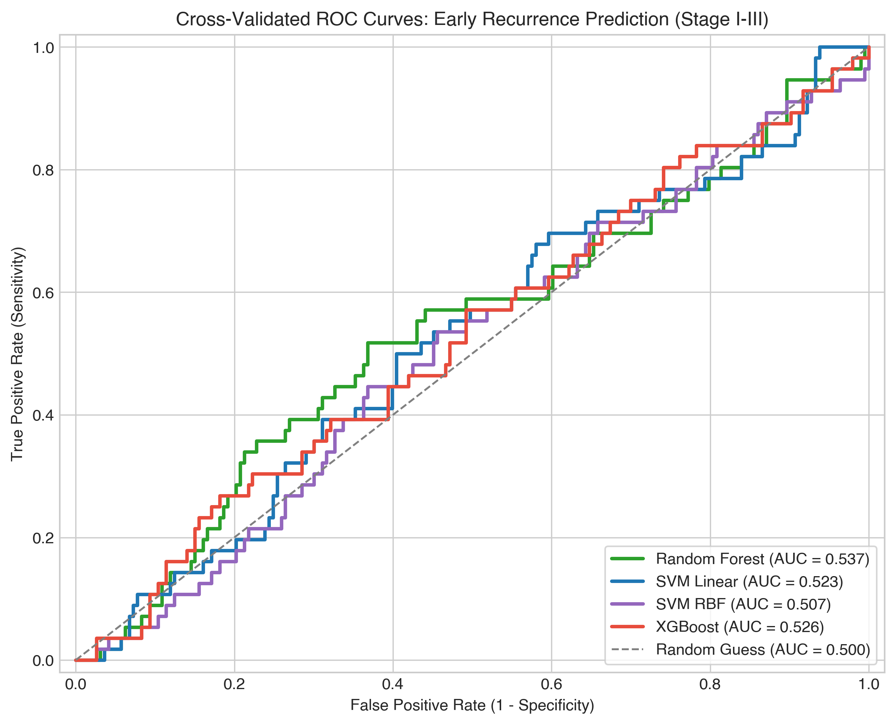
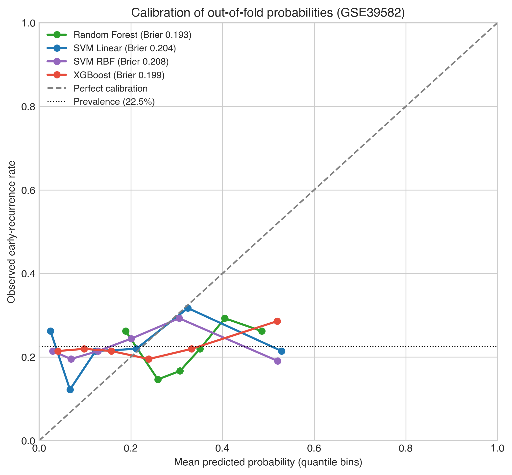
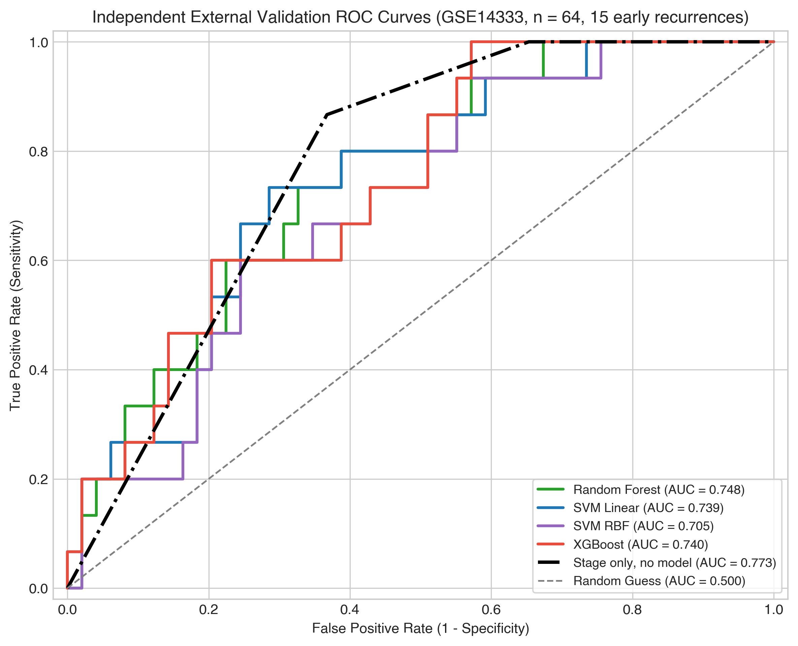
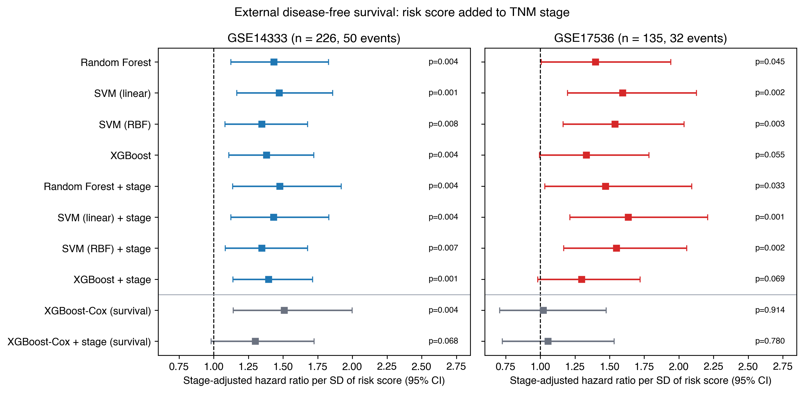
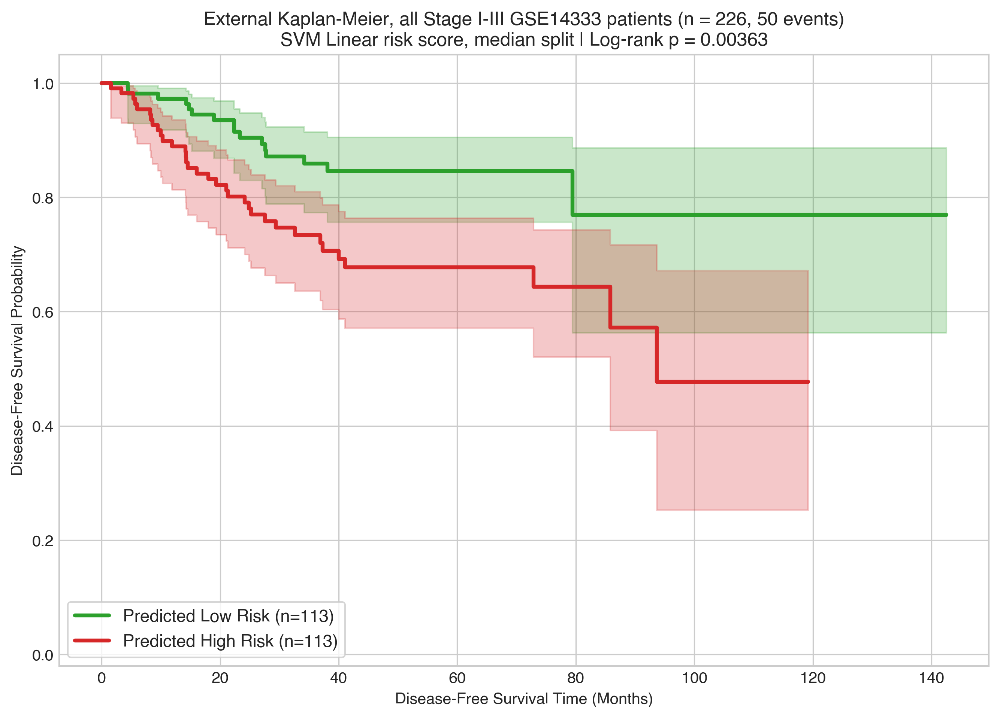
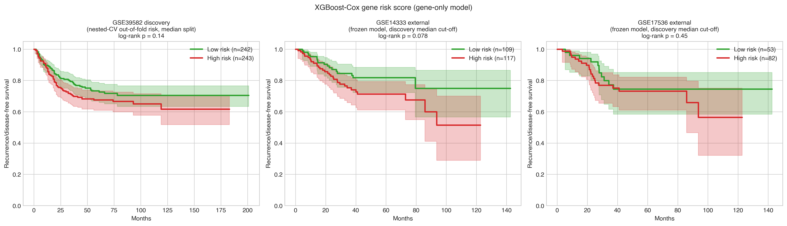
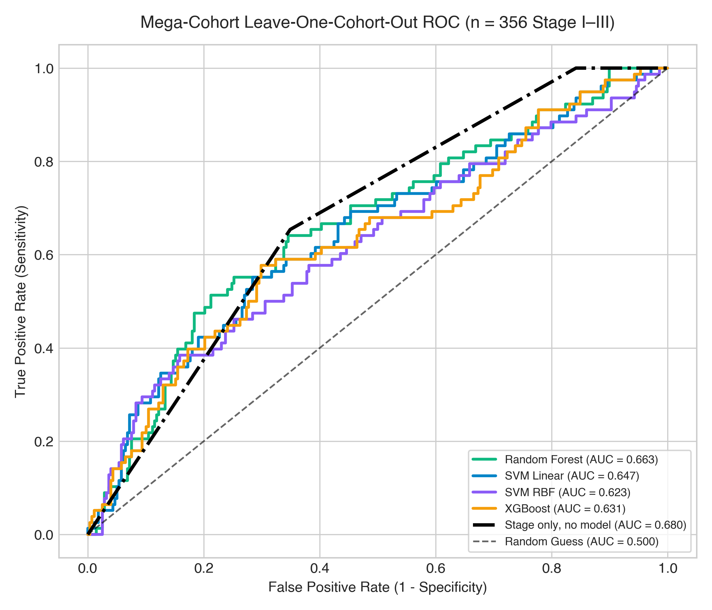
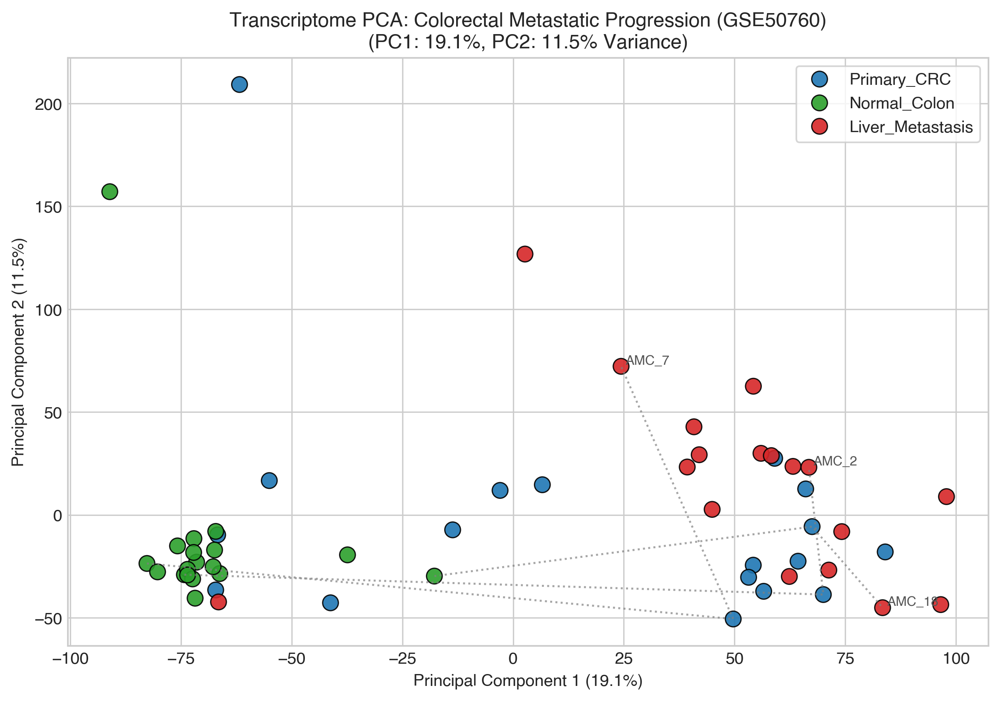

Background. Recurrence after curative resection of Stage I–III colorectal cancer (CRC) is poorly predicted by TNM stage, and many published transcriptomic classifiers report optimistic accuracy because of information leakage or missing clinical baselines. We asked whether gene expression predicts early recurrence beyond stage when evaluated under strict leakage control and independent external validation.
Methods. Using GSE39582 (Affymetrix GPL570) as the discovery cohort, we defined early recurrence as relapse within 12 months and the comparator as disease-free follow-up of at least 60 months, excluding intermediate and ambiguous cases (n = 249; 56 vs 193). Random Forest, linear and RBF support vector machines, and XGBoost were trained with all feature selection, scaling, hyperparameter tuning and threshold selection confined to training folds (5 × 5 repeated nested cross-validation), each in a gene-only and a gene-plus-stage form, and compared with TNM stage alone using bootstrap confidence intervals and DeLong tests. Frozen models were evaluated in GSE14333 (binary n = 64; disease-free survival n = 226) and GSE17536 (survival n = 135) after label-free per-gene alignment. Secondary analyses comprised an XGBoost-Cox survival model on all 485 Stage I–III discovery tumours, a four-cohort leave-one-cohort-out benchmark, TCGA-COADREAD, and a paired primary–liver-metastasis RNA-seq cohort (GSE50760).
Results. No gene-expression model discriminated early recurrence better than stage. Internal nested-CV ROC-AUC was 0.51–0.54 versus 0.626 for stage; external AUC in GSE14333 was 0.70–0.77 versus 0.773 for stage (all DeLong p ≥ 0.44). No gene reached a false-discovery rate below 0.10. However, frozen classifier risk scores were prognostic for disease-free survival independently of stage in both external cohorts: stage-adjusted hazard ratios per standard deviation were 1.35–1.48 in GSE14333 (p = 0.001–0.008, 8/8 models) and 1.30–1.63 in GSE17536 (p < 0.05 for 6/8 models). A survival-trained XGBoost-Cox model added to stage internally (likelihood-ratio p = 0.013) and in GSE14333 (HR 1.51) but not in GSE17536 (HR 1.02). After adjusting for normal-liver admixture, no gene differed significantly between metastases and matched primaries.
Conclusions. Under rigorous evaluation, expression-based models do not replace TNM stage for predicting early recurrence, but their risk scores carry reproducible, stage-independent prognostic information across two independent cohorts. The audit also documents four data-quality pitfalls—normal tissue hidden in a tumour series, cross-cohort normalisation shift, endpoint drift in pooled analyses, and liver admixture in metastasis biopsies—each of which materially changed conclusions.
Keywords: colorectal cancer; recurrence; gene expression; machine learning; nested cross-validation; external validation; TNM stage; survival analysis; data leakage
Colorectal cancer is among the most commonly diagnosed cancers and a leading cause of cancer death worldwide [23]. Most patients present with localised (Stage I–III) disease and undergo curative resection, yet a substantial minority relapse, most often within the first two to three years. Patients who relapse within the first year represent a particularly aggressive group. Adjuvant chemotherapy decisions rest mainly on TNM stage, which captures anatomical spread but not tumour biology; patients with the same stage can have very different outcomes.
Gene-expression profiling has therefore been widely explored for recurrence prediction, and multigene assays have been developed for Stage II–III colon cancer [24, 25]. Public microarray cohorts such as GSE39582 [1], GSE14333 [2] and GSE17536/GSE17537 [3] make it possible to build and test such models. However, high-dimensional settings (≈20,000 genes, a few hundred patients) are notoriously prone to optimistic error estimates when gene selection or tuning is performed outside cross-validation [17, 18], and many reports do not compare their models with the clinical variables already used in practice.
This study had three aims: (i) to build machine-learning classifiers for early (≤ 12-month) recurrence in Stage I–III CRC under strict leakage control; (ii) to judge them against TNM stage alone, internally and in independent cohorts; and (iii) to test whether any expression signal is additive to stage. During the work, an audit of an earlier version of the pipeline uncovered several data and methodological problems; we report the corrected analysis and describe those problems because they are instructive for similar projects.
All data are publicly available. Microarray series matrices (submitter-processed, log2 scale) and platform annotation were downloaded from NCBI GEO [8]; TCGA data from the UCSC Xena TCGA hub [7]. Raw CEL or FASTQ files were not used. Table 1 lists each dataset, its role and the exact download location.
Table 1. Datasets, roles and download links.
| Dataset | Platform | Role in this study | Samples used | Download |
|---|---|---|---|---|
| GSE39582 [1] | Affymetrix HG-U133 Plus 2.0 (GPL570) | Discovery: training, nested CV | 585 in series; 249 binary; 485 survival | GEO page · series matrix |
| GSE14333 [2] | GPL570 | External validation (binary + survival) | 290 in series; 64 binary; 226 survival | GEO page · series matrix |
| GSE17536 [3] | GPL570 | External survival validation; LOCO | 177 in series; 135 survival | GEO page · series matrix |
| GSE17537 [3] | GPL570 | LOCO benchmark only | 55 in series; 2 binary | GEO page · series matrix |
| GPL570 annotation | — | Probe → gene symbol mapping | 54,675 probesets | GPL570.annot.gz |
| GSE50760 [4] | Illumina HiSeq 2000 (GPL11154), FPKM | Paired metastasis analysis | 18 patients × (normal, primary, liver metastasis) | GEO page · GSE50760_RAW.tar |
| TCGA-COAD / READ [6] | Illumina HiSeq V2 (log2 norm. counts) | Secondary RNA-seq check | 306 Stage I–III; 57 curated | Expression: COAD, READ; clinical: COAD, READ; survival (PFI [5]): COAD, READ |
All links were checked on 14 November 2026. LOCO, leave-one-cohort-out; PFI, progression-free interval.
Binary endpoint. Class 1 (early recurrence): documented relapse within 12 months of resection. Class 0: no relapse with at least 60 months of follow-up. Patients with relapse after 12 months, relapse-free follow-up shorter than 60 months, or missing relapse status were excluded rather than imputed, to avoid label noise. The same rule was applied to every cohort (relapse-free survival in GSE39582; disease-free survival in GSE14333/17536/17537; PFI in TCGA).
Inclusion. Stage I–III primary tumours only (Dukes A–C in GSE14333). GSE39582 contains 19 non-tumoral mucosa samples (dataset = "Non Tumoral"), each linked to a tumour from the same patient; these were excluded. From 585 GSE39582 samples, 336 were excluded (19 non-tumoral, 64 Stage IV or unknown stage, 84 late relapse, 160 insufficient follow-up, 9 missing relapse status), leaving 249 (Figure 1).
Survival cohort. For survival analyses, all Stage I–III tumours with follow-up were used (GSE39582 n = 485, 137 RFS events; GSE14333 n = 226, 50 DFS events; GSE17536 n = 135, 32 DFS events).

GPL570 probesets were mapped to HGNC symbols using the GEO annotation (first symbol for multi-gene probes; Affymetrix control probes removed), and each gene was represented by its most variable probeset, giving 21,755 genes. Values were stored as float32 Parquet matrices. Probe collapse is unsupervised and uses no outcome information.
Within each training fold: (1) the 50% most variable genes were retained; (2) the 150 genes with the smallest Welch t-test p-values (Class 1 vs Class 0) were kept; (3) an L1-penalised logistic regression (C = 0.15, balanced class weights) ranked these, and the top k non-zero genes (k = 15 or 35, tuned) were used. For "genes + stage" models, stage was excluded from screening and appended as a feature. Genes were then standardised with training-fold statistics.
Four classifiers were used: Random Forest [9], support vector machines with linear and RBF kernels [10], and XGBoost [11], implemented with scikit-learn [12] and xgboost. Class imbalance was handled with balanced class weights or scale_pos_weight. Hyperparameter grids: RF maximum depth {3, 6} × minimum leaf size {3, 10}; linear SVM C {0.01, 0.1, 1}; RBF SVM C {0.3, 1, 3}; XGBoost depth {2, 3} × learning rate {0.03, 0.1}; each combined with k ∈ {15, 35}.
Repeated nested cross-validation. Five repeats of stratified 5-fold outer CV. Within every outer training fold, a 3-fold inner GridSearchCV (ROC-AUC) selected hyperparameters and k, and the decision threshold was set by Youden's J [16] on inner cross-validated predictions. Out-of-fold probabilities were averaged across repeats. Gene-selection frequency across the 25 outer folds was recorded as a stability measure.
Clinical baseline. TNM stage (I/II/III) was used directly as an ordinal risk score. Every model was compared with it using bootstrap 95% CIs (2,000 resamples) and the paired DeLong test [13].
Final models. Deployed models were tuned by 5-fold GridSearchCV on the full discovery cohort, with the threshold chosen from 5-fold cross-validated predictions. Models and thresholds were frozen before external evaluation.
External cohorts were processed with the same probe mapping. Because each GEO series was normalised separately (the median gene level in GSE14333 was ≈0.5 log2 units below GSE39582), each external gene was location/scale-matched to the discovery training distribution, x′ = (x − μext)/σext · σtrain + μtrain, using the external cohort's own unlabelled Stage I–III samples. No external outcome was used for alignment, tuning or thresholds; unaligned results are reported as a sensitivity analysis. Binary performance was assessed in GSE14333 (n = 64). Survival was assessed in all Stage I–III patients of GSE14333 and GSE17536 using Harrell's C-index [15] and a Cox model [21] of disease-free survival on the standardised risk score adjusted for stage.
To use every Stage I–III discovery tumour, we trained XGBoost with the survival:cox objective on GSE39582 (n = 485). Inside each training fold, genes were filtered by variance and ranked by absolute correlation with null-model martingale residuals [22]; 50 or 150 genes were kept. Depth {2, 3} and learning rate {0.02, 0.05} were tuned with the same 5 × 5 nested scheme, scoring the C-index. Added value over stage was tested with a likelihood-ratio test of Cox(stage + score) versus Cox(stage). The frozen model and a discovery-median risk cut-off were applied to both external cohorts.
Leave-one-cohort-out (LOCO). GSE39582, GSE14333, GSE17536 and GSE17537 were pooled under the curated endpoint (n = 356). Each cohort was gene-wise standardised on its own Stage I–III samples, and each was predicted by models tuned and trained on the others. TCGA-COADREAD. The curated endpoint was applied to PFI [5]; with only 57 eligible patients, fixed hyperparameters and 10 × repeated 5-fold CV were used. Differential expression. Welch t-tests with Benjamini–Hochberg FDR [14] compared Class 1 vs Class 0 in GSE39582 (descriptive only; not used for model selection). Metastasis (GSE50760). Log2(FPKM+1) values were compared between paired liver metastases and primaries. A liver-admixture score (mean expression of 30 hepatocyte-specific genes such as ALB, APOA1, FGA/FGB/FGG, SERPINA1 and CYP2E1) was computed per sample; for each gene, the within-patient difference was regressed on the pair's excess liver score, and the intercept estimated the metastasis effect at zero admixture.
Python 3.10 with scikit-learn [12], xgboost [11], lifelines [20], SciPy, statsmodels, SHAP [19] and pandas/pyarrow, on an Apple M4 laptop (16 GB). All random seeds were fixed (42). The full pipeline, results tables and an interactive Streamlit dashboard are in the public repository (Code availability).
Table 2. Characteristics of the analysed cohorts.
| Cohort | n | Events | Median age (y) | Male, % | Stage I / II / III | Median follow-up (mo) |
|---|---|---|---|---|---|---|
| GSE39582 binary | 249 | 56 early relapses | 68 | 51.4 | 15 / 134 / 100 | — |
| GSE39582 survival | 485 | 137 RFS | 69 | 55.7 | 32 / 253 / 200 | 50.0 |
| GSE14333 survival | 226 | 50 DFS | 67 | 53.1 | 41 / 94 / 91 | 38.5 |
| GSE14333 binary | 64 | 15 early relapses | subset of the survival cohort | |||
| GSE17536 survival | 135 | 32 DFS | 67 | 51.9 | 24 / 55 / 56 | 38.1 |
| TCGA-COADREAD curated | 57 | 28 early PFI events | — | 6 / 26 / 25 | — | |
In the GSE39582 binary cohort no Stage I patient relapsed early; early relapse occurred in 24/134 Stage II and 32/100 Stage III patients.
Among 21,755 genes, 1,144 had nominal p < 0.05, 218 p < 0.01 and 28 p < 0.001 between early-relapse and long-term disease-free tumours, but none reached FDR < 0.10 (lowest q = 0.15; COCH and DMRT2). Other leading candidates included SPACA3, UBD, KLK10, MSLN and KLK6 (Figure 2). These genes are hypotheses rather than established biomarkers.

With tuning confined to training folds, all models performed close to chance (ROC-AUC 0.507–0.539), while stage alone reached 0.626 (Table 3; Figure 3). Stage was significantly better than the RBF SVM variants (DeLong p = 0.023 and 0.046) and numerically better than all others (p = 0.06–0.09). Adding stage as a feature did not recover stage-level performance, because it competes with 15–35 noisy gene features. Calibration curves were flat around the 22.5% prevalence. Gene selection was unstable: only 2–6 genes per model were selected in at least half of the 25 outer folds (most stable: EPSTI1, 84%). An earlier version of the pipeline with hand-set hyperparameters reported AUC 0.53–0.59, illustrating the optimism that untested tuning choices can introduce.
Table 3. Internal discrimination in GSE39582 (n = 249; 5 × 5 repeated nested CV).
| Model | ROC-AUC (95% CI) | Mean ± SD over repeats | PR-AUC | DeLong p vs stage | Sens.* | Spec.* | Brier |
|---|---|---|---|---|---|---|---|
| Stage only | 0.626 (0.557–0.697) | — | 0.285† | — | — | — | — |
| Random Forest | 0.537 (0.451–0.625) | 0.521 ± 0.026 | 0.241 | 0.089 | 0.429 | 0.611 | 0.193 |
| SVM (linear) | 0.523 (0.435–0.611) | 0.515 ± 0.041 | 0.229 | 0.059 | 0.518 | 0.560 | 0.204 |
| SVM (RBF) | 0.507 (0.422–0.594) | 0.510 ± 0.022 | 0.218 | 0.023 | 0.643 | 0.472 | 0.208 |
| XGBoost | 0.526 (0.438–0.613) | 0.513 ± 0.028 | 0.236 | 0.065 | 0.429 | 0.534 | 0.199 |
| Random Forest + stage | 0.536 (0.448–0.624) | 0.521 ± 0.015 | 0.243 | 0.082 | 0.482 | 0.591 | 0.196 |
| SVM (linear) + stage | 0.539 (0.452–0.626) | 0.528 ± 0.031 | 0.237 | 0.087 | 0.607 | 0.461 | 0.201 |
| SVM (RBF) + stage | 0.528 (0.441–0.613) | 0.526 ± 0.012 | 0.236 | 0.046 | 0.607 | 0.461 | 0.201 |
| XGBoost + stage | 0.529 (0.440–0.616) | 0.520 ± 0.027 | 0.241 | 0.075 | 0.429 | 0.539 | 0.196 |
*At the threshold tuned inside each training fold. †Average precision (trapezoidal PR-AUC over-interpolates a three-level score). Prevalence 22.5%.


Frozen gene-only models reached ROC-AUC 0.705–0.748 and gene-plus-stage models 0.744–0.773, against 0.773 for stage alone (Table 4; Figure 4). No model differed significantly from stage (DeLong p ≥ 0.44), and the 95% CIs were wide (15 events). Without alignment, AUC was lower (by up to 0.11) and, at a 0.50 threshold, sensitivity was 0.07–0.33; with the frozen discovery thresholds, sensitivity was 0.53–0.93.
Table 4. External binary discrimination in GSE14333 (n = 64; 15 early relapses).
| Model | ROC-AUC (95% CI) | DeLong p vs stage | AUC unaligned | Frozen threshold | Sens. | Spec. | Sens. at 0.50 |
|---|---|---|---|---|---|---|---|
| Stage only | 0.773 (0.675–0.855) | — | — | — | — | — | — |
| Random Forest | 0.748 (0.606–0.869) | 0.77 | 0.705 | 0.31 | 0.600 | 0.755 | 0.067 |
| SVM (linear) | 0.739 (0.590–0.864) | 0.69 | 0.717 | 0.27 | 0.533 | 0.755 | 0.200 |
| SVM (RBF) | 0.705 (0.556–0.837) | 0.44 | 0.595 | 0.08 | 0.867 | 0.449 | 0.200 |
| XGBoost | 0.740 (0.600–0.862) | 0.69 | 0.675 | 0.18 | 0.600 | 0.694 | 0.267 |
| Random Forest + stage | 0.757 (0.615–0.881) | 0.84 | 0.735 | 0.37 | 0.733 | 0.653 | 0.200 |
| SVM (linear) + stage | 0.744 (0.593–0.869) | 0.72 | 0.703 | 0.08 | 0.933 | 0.265 | 0.133 |
| SVM (RBF) + stage | 0.757 (0.612–0.876) | 0.83 | 0.646 | 0.11 | 0.800 | 0.592 | 0.200 |
| XGBoost + stage | 0.773 (0.629–0.895) | 1.00 | 0.729 | 0.09 | 0.667 | 0.735 | 0.333 |

Applied to every Stage I–III patient with follow-up, the frozen classifier risk scores predicted disease-free survival after adjustment for stage in both independent cohorts (Table 5; Figure 5). In GSE14333 all eight models were significant (HR per SD 1.35–1.48, p = 0.001–0.008). In GSE17536, which was never used for any modelling decision, six of eight were significant (HR 1.30–1.63); the linear SVM gave HR 1.59 (95% CI 1.20–2.12, p = 0.002), and the stage-combined SVMs slightly exceeded stage alone in C-index (0.676 vs 0.657). A median split of the pre-specified linear SVM score separated DFS in GSE14333 (log-rank p = 3.6 × 10−3; Figure 6).
Table 5. External disease-free survival: C-index and stage-adjusted Cox hazard ratio per SD of the frozen risk score.
| Model | GSE14333 (n = 226, 50 events) | GSE17536 (n = 135, 32 events) | ||
|---|---|---|---|---|
| C-index | HR (95% CI), p | C-index | HR (95% CI), p | |
| Stage only | 0.675 | — | 0.657 | — |
| Random Forest | 0.628 | 1.43 (1.12–1.83), 0.004 | 0.606 | 1.40 (1.01–1.94), 0.045 |
| SVM (linear) | 0.630 | 1.47 (1.17–1.86), 0.001 | 0.653 | 1.59 (1.20–2.12), 0.002 |
| SVM (RBF) | 0.625 | 1.35 (1.08–1.68), 0.008 | 0.651 | 1.54 (1.16–2.04), 0.003 |
| XGBoost | 0.629 | 1.38 (1.11–1.72), 0.004 | 0.610 | 1.33 (0.99–1.78), 0.055 |
| Random Forest + stage | 0.636 | 1.48 (1.14–1.92), 0.004 | 0.618 | 1.47 (1.03–2.09), 0.033 |
| SVM (linear) + stage | 0.643 | 1.43 (1.12–1.83), 0.004 | 0.676 | 1.63 (1.21–2.21), 0.001 |
| SVM (RBF) + stage | 0.650 | 1.35 (1.08–1.68), 0.007 | 0.676 | 1.55 (1.17–2.06), 0.002 |
| XGBoost + stage | 0.618 | 1.40 (1.14–1.71), 0.001 | 0.593 | 1.30 (0.98–1.72), 0.069 |


XGBoost-Cox trained on all 485 Stage I–III discovery tumours achieved a nested-CV C-index of 0.587 (gene-only) and 0.599 (with stage), versus 0.619 for stage, but added information to stage (HR per SD 1.24, 95% CI 1.05–1.48; likelihood-ratio p = 0.013). Externally it added to stage in GSE14333 (HR 1.51, p = 0.004) but not in GSE17536 (HR 1.02, p = 0.91) (Table 6; Figure 7). Its selected genes were dominated by proliferation and DNA-replication genes (e.g. MCM6, CDC6, RFC5, STIL). Thus the classifiers trained on clear-cut early-relapse versus long-term disease-free tumours transferred more consistently than the model trained on all follow-up times.
Table 6. XGBoost-Cox survival model.
| Cohort | Model | C-index (95% CI) | Stage-adjusted HR per SD (95% CI) | LR test p vs stage |
|---|---|---|---|---|
| GSE39582 nested CV (n = 485, 137 events) | Stage only | 0.619 (0.577–0.659) | — | — |
| XGB-Cox genes | 0.587 (0.540–0.635) | 1.24 (1.05–1.48) | 0.013 | |
| XGB-Cox genes + stage | 0.599 (0.552–0.647) | 1.24 (1.04–1.48) | 0.017 | |
| GSE14333 (n = 226, 50 events) | Stage only | 0.675 (0.611–0.744) | — | — |
| XGB-Cox genes | 0.597 (0.511–0.680) | 1.51 (1.14–2.00) | 0.005 | |
| XGB-Cox genes + stage | 0.616 (0.537–0.689) | 1.30 (0.98–1.72) | 0.072 | |
| GSE17536 (n = 135, 32 events) | Stage only | 0.657 (0.566–0.737) | — | — |
| XGB-Cox genes | 0.511 (0.418–0.610) | 1.02 (0.71–1.47) | 0.91 | |
| XGB-Cox genes + stage | 0.555 (0.445–0.659) | 1.05 (0.73–1.53) | 0.78 |

Under the curated endpoint the four GPL570 cohorts contributed 356 patients (GSE39582 249, GSE14333 64, GSE17536 41, GSE17537 2; 78 events). Pooled LOCO AUC was 0.623–0.663 versus 0.680 for stage (DeLong p ≥ 0.22). Per held-out cohort, models scored 0.59–0.62 in GSE39582 (stage 0.63), 0.75–0.86 in GSE14333 (stage 0.77) and 0.89–0.95 in GSE17536 (stage 0.79; only 7 events) (Figure 8). In TCGA only 57 patients met the curated endpoint; models scored 0.40–0.43 versus 0.635 for stage. Below-chance cross-validated AUC is a known small-sample artefact of selecting from tens of thousands of noisy features and indicates no detectable signal.

Hepatocyte-marker expression averaged 1.1 log2 FPKM in primaries and 7.6 in metastases; 15 of 18 metastasis samples carried a strong liver signal and three almost none. Unadjusted paired tests found 700 genes at FDR < 0.05, with top enriched pathways (complement/coagulation, bile secretion, cytochrome P450 metabolism) characteristic of normal liver. After liver adjustment, no gene remained significant (lowest FDR ≈ 1.0, also among the 13,131 expressed genes), and no recurrence candidate overlapped an adjusted-significant metastasis gene. Principal-component separation of metastases (Figure 9) therefore largely reflects tissue admixture.

Evaluated with tuning, selection and thresholds confined to training folds, gene-expression classifiers did not discriminate early recurrence better than TNM stage, internally or externally. Yet their risk scores were consistently prognostic after adjustment for stage across two independent cohorts, with similar effect sizes (HR ≈ 1.3–1.6 per SD) across four algorithms and two model forms. The most defensible conclusion is therefore that tumour expression contains prognostic information complementary to stage, but not enough on its own to classify individual patients reliably.
The apparent contrast between near-chance internal AUC and positive external survival results has several plausible explanations: the internal binary analysis has only 56 events, so its estimates are imprecise; the survival analyses use all Stage I–III patients and the full follow-up, which provides more information; and the external cohorts may have a stronger stage–outcome relationship. These findings should not be over-interpreted until a single pre-specified model is confirmed in a further cohort.
dataset must be inspected before modelling.The data are retrospective and heterogeneous in treatment; adjuvant chemotherapy was not modelled. The external binary cohort has 15 events, so AUC intervals span roughly ±0.13. Eight classifier variants were tested in two cohorts without formal multiplicity correction; the evidence lies in the consistency across models and cohorts rather than in any single p-value. Hyperparameter grids were small to fit a laptop budget. The extreme-phenotype endpoint excludes about half of eligible patients, which limits clinical applicability. Gene selection was unstable, and SHAP-based rankings from a model with internal AUC ≈ 0.54 are exploratory. The liver-adjustment model in GSE50760 is linear and based on 18 pairs. TCGA could not be used meaningfully under the curated endpoint.
(i) Pre-specify one model (for example, the linear SVM with stage) and validate it in an additional cohort with long follow-up; (ii) evaluate the score within Stage II and Stage III separately and against established molecular factors such as mismatch-repair status; (iii) assess clinical utility with decision-curve analysis; (iv) re-analyse metastasis data with deconvolution of tissue composition and count-based models.
Machine-learning models built on primary-tumour gene expression did not outperform TNM stage for classifying early recurrence in Stage I–III colorectal cancer once evaluated without information leakage. Their risk scores nevertheless predicted disease-free survival beyond stage in two independent cohorts, suggesting a reproducible, complementary prognostic signal. Careful data curation, a clinical baseline and external validation were essential to reach these conclusions.
All datasets are public; direct download links are given in Table 1. GEO series pages: GSE39582, GSE14333, GSE17536, GSE17537, GSE50760; platform GPL570. TCGA-COAD/READ via the UCSC Xena browser: TCGA Colon Cancer (COAD) and TCGA Rectal Cancer (READ).
Source code, results tables, figure scripts and the Streamlit dashboard: https://github.com/divyanshu15/CRC-ML-Model. The full pipeline is run with clinical_labels.py → preprocessing.py → feature_selection.py → model_training.py → evaluation.py → megacohort_pipeline.py → external_validation.py → survival_model.py → metastasis_analysis.py (see README).
Ethics: secondary analysis of de-identified public data; no new human-subject data were collected. Funding: [to be completed]. Competing interests: none declared. Acknowledgements: [to be completed]. Clinical use: this is a research study and not a validated clinical decision tool.